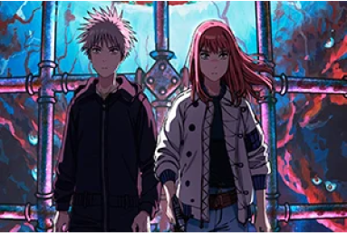

Mahoutsukai no Yome

Mahō Tsukai no Yome, también conocida como The Ancient Magus Bride, es una serie de manga escrita e ilustrada por Kore Yamazaki. Autor: Kore Yamazaki Géneros: Fantasía oscura, Misterio, Ficción sobrenatural Director: Norihiro Naganuma (temporada 1); Kazuaki Terasawa (temporada 2) Editorial: Mag Garden Licenciado por: Crunchyroll (Mundial excepto Asia) Primera publicación: 30 de noviembre de 2013
Tengoku Daimakyō
Tengoku Daimakyō, también conocida como Heavenly Delusion, es una serie japonesa de manga escrita e ilustrada por Masakazu Ishiguro. Fue serializada en la revista Gekkan Afternoon de Kodansha desde enero de 2018. Autor: Masakazu Ishiguro Géneros: Ficción de aventuras, Misterio, Ciencia ficción Demografía: Seinen Director: Hirotaka Mori Editorial: Kodansha Episodios: 13
Jigokuraku
Jigokuraku, también conocida como Hell's Paradise, es una serie de manga escrita e ilustrada por Yūji Kaku. Ha sido serializada de forma gratuita en la aplicación y sitio web Shōnen Jump+ desde el 22 de enero de 2018, con los capítulos siendo recopilados y publicados por Shūeisha en ocho volúmenes tankōbon. Autor: Yūji Kaku Géneros: Acción, Fantasía oscura, Thriller psicológico Demografía: Shōnen Director: Kaori Makita Editorial: Shūeisha Episodios: 13